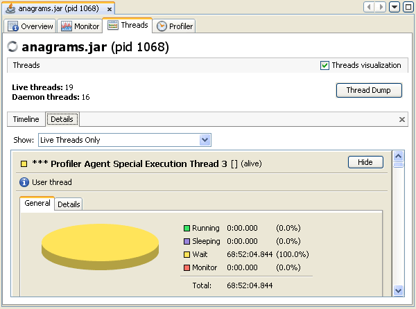
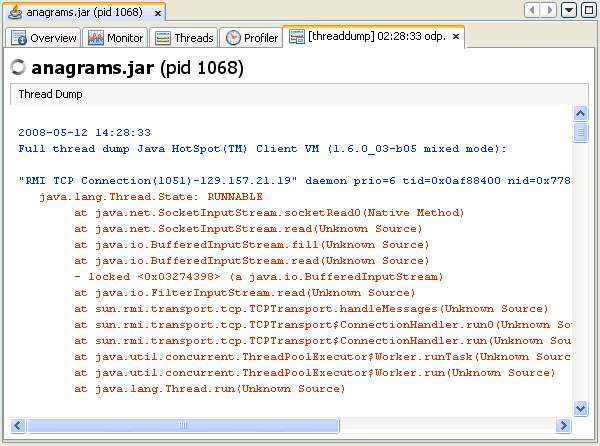

| Documentation Contents |
Monitoring Application ThreadsJava VisualVM presents data for local and remote applications in a tab specific for that application. Application tabs are displayed in the main window to the right of the Applications window. You can have multiple application tabs open at one time. Each application tab contains sub-tabs that display different types of information about the application. Monitoring Thread ActivityJava VisualVM displays real-time, high-level data on thread
activity in the Threads tab. By default the Threads tab displays a timeline of current thread activity. You can click a thread in the timeline to view details about that thread in the Details tab. Timeline TabThis tab displays a timeline with real-time thread states. Use the buttons in the Timeline toolbar to zoom in/out on the current view and to switch to the Scale to Fit mode. The drop-down list enables you to select which threads are displayed. You can choose to view all threads, live threads or finished threads. You can also select a single thread or multiple threads to display a subset of the threads. You can double-click on a thread timeline to open that thread in the Details tab. A timeline for each thread provides a quick overview of the thread's activity. 
Details TabThe Details tab displays more detailed information about individual threads. Using the drop-down list, you can select to display all threads, all live threads or all finished threads. You can also choose to display only the details of threads selected in the Timeline view. For each thread, the name, classname and current status (alive/finished) are displayed. A short description of the thread is also provided. Each thread displayed in the Details tab has the following tabs:
A timeline for each thread provides a quick overview of the thread's activity. Taking a Thread DumpYou can use Java VisualVM to take a thread dump (stack trace) while a local application is running. Taking a thread dump does not stop the application. When you print the thread dump you get a printout of the thread stack that includes thread states for the Java threads. When you print a thread dump in Java VisualVM, the tool prints a stack trace of the active threads of the application. Using Java VisualVM to take a thread dump can be very convenient in cases where you do not have a command-line console for the application. You can use a stack trace to help diagnose a number of issues such as deadlocks or when an application hangs. Screenshot of thread dump (stack trace) in thread dump sub-tab.  |
Copyright © 1993, 2011, Oracle and/or its affiliates. All rights reserved. Please send comments using this Feedback page. |
Java Technology |